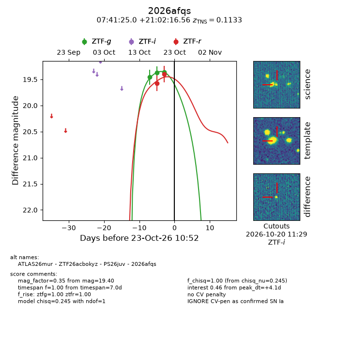
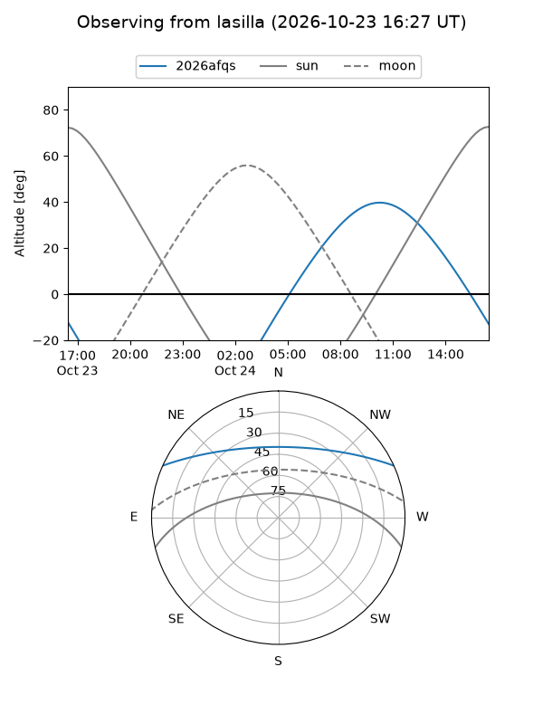
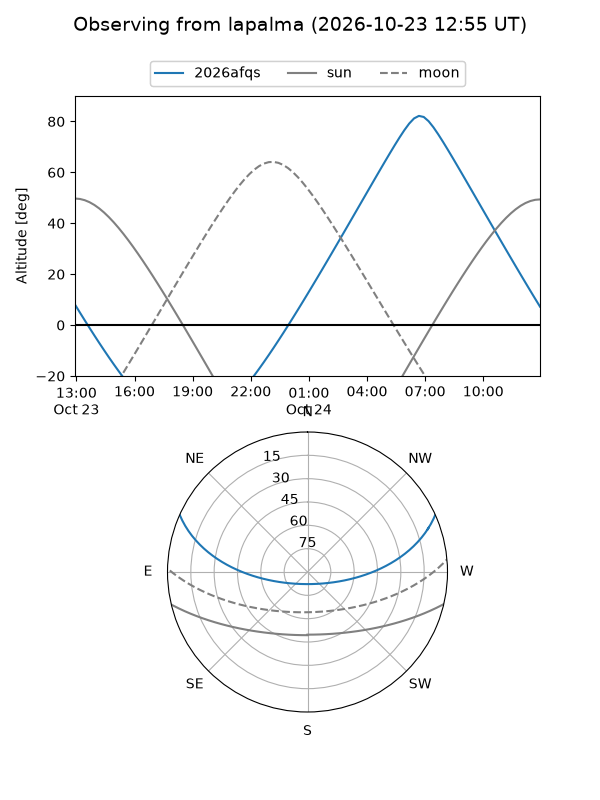
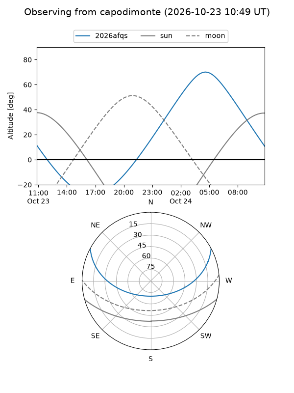
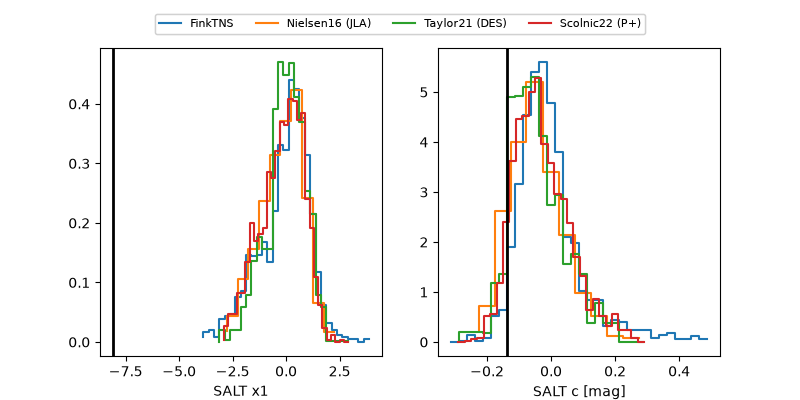

2026afqs
Target 2026afqs at 2026-10-23 10:54
Aliases and brokers:
FINK-ZTF: ztf.fink-portal.org/ZTF26acbokyz
Lasair-ZTF: lasair-ztf.lsst.ac.uk/objects/ZTF26acbokyz
ALeRCE-ZTF: alerce.online/object/ZTF26acbokyz
YSE-PZ: ziggy.ucolick.org/yse/transient_detail/2026afqs
TNS name: wis-tns.org/object/2026afqs
Direct TNS query: direct search
alt names
ZTF26acbokyz (ztf,fink_ztf)
2026afqs (tns,yse)
PS26juv (panstarrs)
ATLAS26mur (atlas)
Coordinates:
equatorial (ra, dec) = 115.3543,+21.03793
equatorial (HMS+DMS) = 07:41:25.04,+21:02:16.56
galactic (l, b) = (198.9189,+20.08461)
Flags:
TNS type: SN Ia
TNS redshift: 0.1133
peak dt: +4.1
Photometry:
last ztfg=19.36, ztfr=19.40
3 ztfg, 2 ztfr detections
Lightcurve

Visibility



Additional plots
